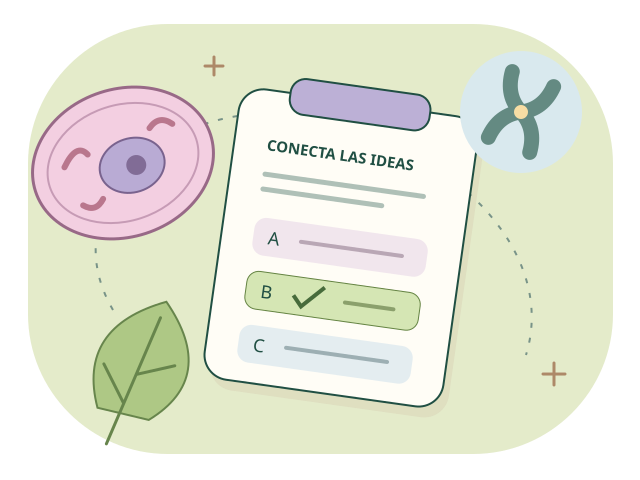

KENISA · De la célula a la energía
Biología
examen.
Todo lo que aprendiste,
en un mismo lugar.
Repasa las partes 1, 2, 3 y 4, practica el temario de tu maestra o ponte a prueba con un examen completo de 20 preguntas.
Elegir mi examen ↓
Examen general · 690 preguntas · 15 actividades
Todo Biología
partes 1–4.
Todo aleatorio, por actividad o una pregunta de cada actividad. Recibe tu calificación, revisa las explicaciones y continúa con preguntas que todavía no hayas respondido.
Entrar al examen general →Primero todas.
Después, otra vuelta.
Cambiar de modo no borra el historial. Las preguntas solo vuelven a estar disponibles cuando terminas todo el banco.
Temario de la maestra · 300 preguntas · 11 temas
Cada tema.
Una nueva conexión.
Seres vivos, adaptaciones, células, biomoléculas, metabolismo, mitosis, meiosis y hongos. Opción múltiple y verdadero o falso, con explicaciones y preguntas de aplicación.
Entrar al examen del temario →Todo aleatorio.
Por tema. Una de cada.
Más preguntas para los temas amplios. El mismo recorrido sin repeticiones y un historial propio para este examen.
Examen de práctica · 20 preguntas · Versiones 1 y 2
Primero responde.
Después, descubre.
Diez preguntas de opción múltiple y diez de verdadero o falso. Contesta todo, entrega y recibe tu calificación con una revisión de errores y explicaciones.
Entrar al examen de práctica →Un examen completo.
Una entrega final.
Cambia tus elecciones antes de entregar. Elige entre dos versiones y retoma tu avance en este navegador.
Tu mapa de estudio
Cuatro partes, conectadas.
La célula y sus componentes
Célula animal, biomoléculas y niveles de organización.
228 preguntas · Volver a estudiar ↗Biología parte 2La vida se multiplica
ADN, mitosis, meiosis y reproducción.
70 preguntas · Volver a estudiar ↗Biología parte 3Diversidad de los seres vivos
Procariotas, célula vegetal, clasificación y hongos.
188 preguntas · Volver a estudiar ↗Biología parte 4Materia y energía
Transporte, metabolismo, respiración y fermentación.
204 preguntas · Volver a estudiar ↗El examen general incluye los dos cuestionarios de célula animal y las tarjetas de clasificación de biomoléculas como preguntas de opciones. El avance del examen se guarda en este navegador.